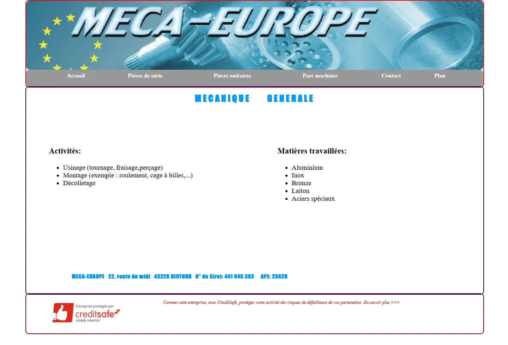

Faites glisser pour comparer la refonte
Refonte complète · Riotord
Meca Europe
L’ancien site présentait l’essentiel, mais sa mise en page et sa navigation ne correspondaient plus aux usages actuels. La refonte donne davantage de place au métier, aux pièces réalisées et au parc machines.
- Nouvelle identité visuelle plus professionnelle
- Navigation claire entre pièces de série, pièces unitaires et parc machines
- Lecture adaptée au téléphone et accès direct à la demande de devis